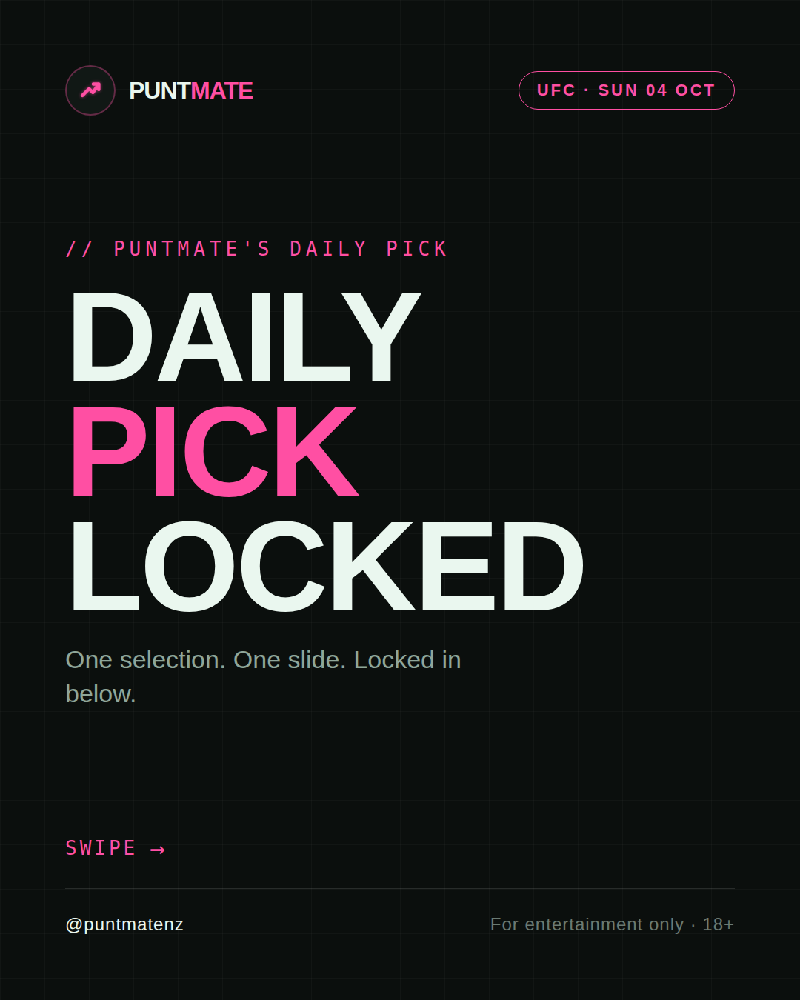
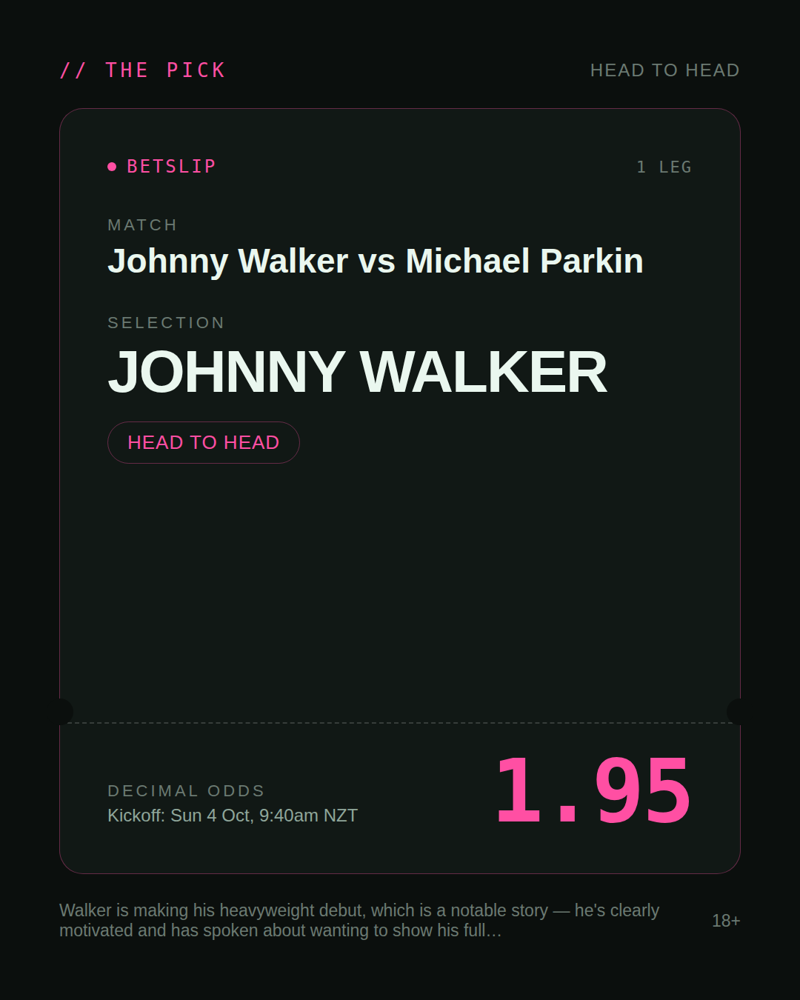
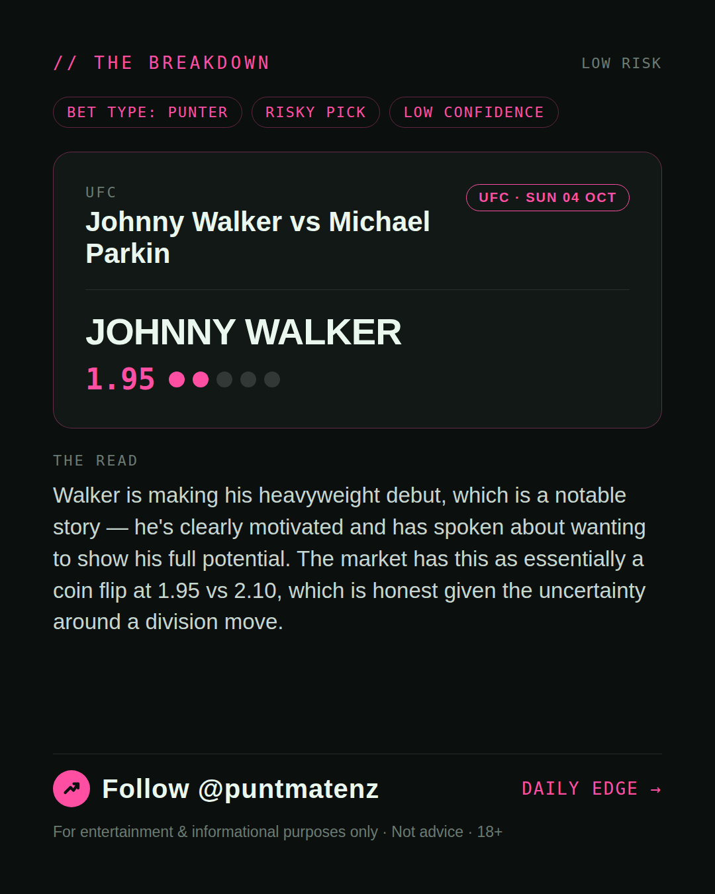
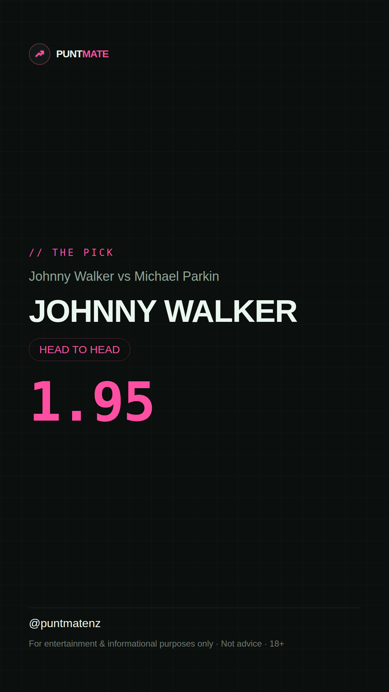

*🎯 PUNTMATE NZ — UFC* 🏟 Johnny Walker vs Michael Parkin *PICK:* JOHNNY WALKER *ODDS:* 1.95 (Head to Head) *BET TYPE: PUNTER* _Walker is making his heavyweight debut, which is a notable story — he's clearly motivated and has spoken about wanting to show his full potential. The market has this as essentially a coin flip at 1.95 vs 2.10, which is honest given the uncertainty around a division move._ ────────────────── 📲 Join Telegram for daily picks ⚠️ For entertainment & informational purposes only. Not advice. 18+.
🎯 UFC — Johnny Walker vs Michael Parkin JOHNNY WALKER @ 1.95 (Head to Head) BET TYPE: PUNTER Solid touch here. Not a lock, but the value's real and the form backs it up. Walker is making his heavyweight debut, which is a notable story — he's clearly motivated and has spoken about wanting to show his full potential. The market has this as essentially a coin flip at 1.95 vs 2.10, which is honest given the uncertainty around a division move. Follow for daily value picks → @puntmatenz ⚠️ For entertainment & informational purposes only. Not advice. 18+. #PuntmateNZ #SportsBetting #NZTAB #UFC
| has_pick | True |
| pick_id | 2026-10-02_Johnny_Walker_vs_Michael_Parkin |
| run_id | 37074451819 |
| generated_at | 2026-10-02T22:50:56.524222+00:00 |
| post_date | 2026-10-02 |
| match | Johnny Walker vs Michael Parkin |
| sport | mma_mixed_martial_arts |
| sport_label | UFC |
| market | Head to Head |
| selection | JOHNNY WALKER |
| odds | 1.95 |
| bet_type | PUNTER_BET |
| bet_type_label | BET TYPE: PUNTER |
| bet_type_reason | Solid touch here. Not a lock, but the value's real and the form backs it up. Walker is making his heavyweight debut, which is a notable story — he's clearly motivated and has spoken about wanting to show his full potential. The market has this as essentially a coin flip at 1.95 vs 2.10, which is honest given the uncertainty around a division move. |
| classification | RISKY_PICK |
| risk | RISKY_PICK |
| confidence | LOW |
| confidence_label | LOW |
| final_explanation | Walker is making his heavyweight debut, which is a notable story — he's clearly motivated and has spoken about wanting to show his full potential. The market has this as essentially a coin flip at 1.95 vs 2.10, which is honest given the uncertainty around a division move. |
| public_caution | Keep this one light — the value's there but so is the uncertainty. |
| theme | night |
| carousel_paths | ['data/review/2026-10-02_Johnny_Walker_vs_Michael_Parkin/cover.png', 'data/review/2026-10-02_Johnny_Walker_vs_Michael_Parkin/tip.png', 'data/review/2026-10-02_Johnny_Walker_vs_Michael_Parkin/breakdown.png'] |
| carousel_urls | ['https://raw.githubusercontent.com/kingofthecastle24/puntmate/main/data/cards/2026-10-02_Johnny_Walker_vs_Michael_Parkin_night_1_cover.png', 'https://raw.githubusercontent.com/kingofthecastle24/puntmate/main/data/cards/2026-10-02_Johnny_Walker_vs_Michael_Parkin_night_2_tip.png', 'https://raw.githubusercontent.com/kingofthecastle24/puntmate/main/data/cards/2026-10-02_Johnny_Walker_vs_Michael_Parkin_night_3_breakdown.png'] |
| story_path | data/review/2026-10-02_Johnny_Walker_vs_Michael_Parkin/story.png |
| story_url | https://raw.githubusercontent.com/kingofthecastle24/puntmate/main/data/cards/2026-10-02_Johnny_Walker_vs_Michael_Parkin_night_story.png |
| intended_platforms | ['telegram', 'instagram_feed', 'instagram_story', 'facebook'] |
| workflow_state | GENERATED |
| has_punter_multi | False |
| has_gambler_multi | False |
| has_degenerate_multi | False |